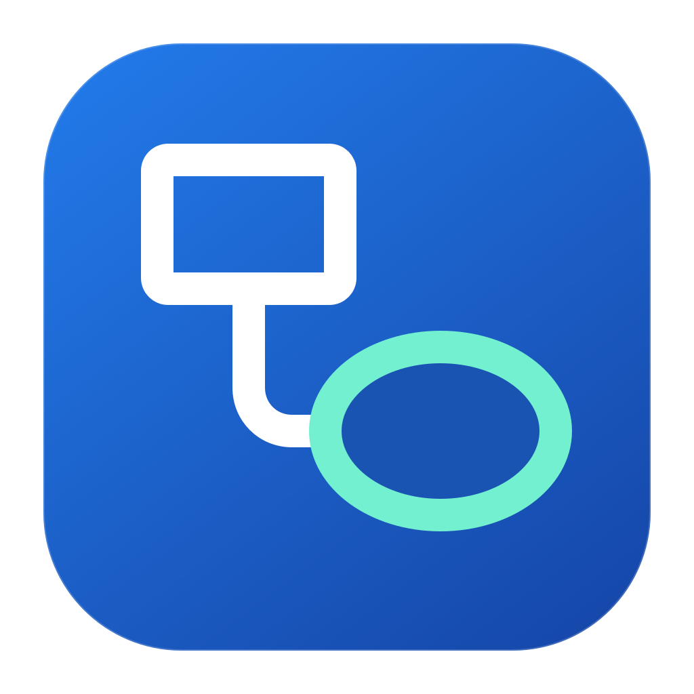

OPM STUDIO
客户端设置
智能助手
建模可离线使用。启用助手后，当前任务的模型上下文会发送至你配置的模型服务。
本地数据
备份包括模型、布局、脑图和助手会话，不含 API Key。恢复前会保存当前数据的回退副本。
诊断
诊断文件只包含版本和服务状态，不含模型、对话及凭证。

OPM STUDIO
建模可离线使用。启用助手后，当前任务的模型上下文会发送至你配置的模型服务。
备份包括模型、布局、脑图和助手会话，不含 API Key。恢复前会保存当前数据的回退副本。
诊断文件只包含版本和服务状态，不含模型、对话及凭证。